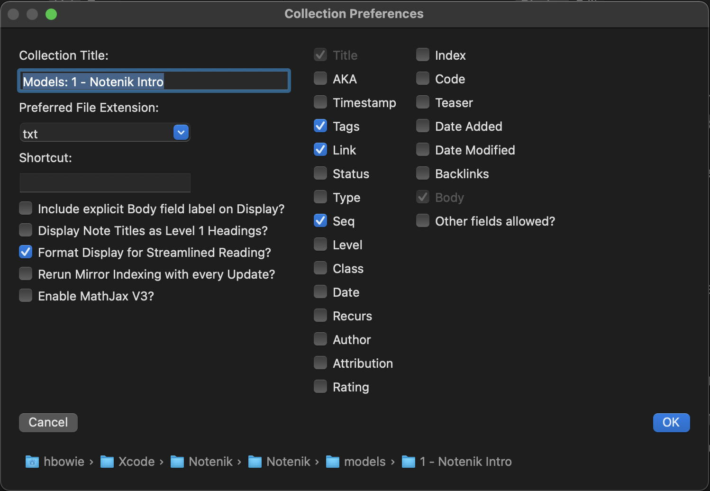

Notenik Intro
Back to Notenik.app
3 Collection Preferences
Much of the power behind Notenik is available through its menu structure. As you explore Notenik's menus, be sure and pay attention to the keyboard shortcuts that are available for many of the commands. As you make increasing use of Notenik, you'll find that these shortcuts can become real time-savers.
Let's start by opening the Collection Preferences, available at the top of the Collection menu. These are settings that apply only to the frontmost, currently open Collection.
Right now, just let me call your attention to two items here.
Note the checkbox to allow you to Format Display for Streamlined Reading. This is probably checked at the moment. This setting changes the Display tab in order to make it more suitable for reading one Note after another, focusing primarily on the Body of each Note. One of the effects of this option is to provide the Next link at the bottom of each page. This is a useful option for this Introduction to Notenik, which is why it should probably be checked, at least to start out.
The other item to note is the list of fields you'll see on the right side of the Collection Preferences. You can add new fields to your Collection by checking boxes here, and remove fields by unchecking boxes. You can see there is quite a sizable list of different field types available! You can also see which fields are currently selected for this Collection.
That's it for this window for now. Click the Cancel button when you're done reviewing the contents of this window.
Next: The Collection Window